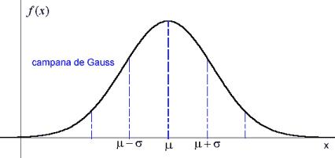

# AI applied to
### High Frequency Domain Investment (HFDI)
Really: **AI and maths for domainers**
Note:
Gracias organización, Namescon y Sponsors.
Especial a Dietmar dedicación 10 años evento especial y de calidad.
### About me
Antonio Villamarin
CEO at namemotion.com
In domaining from 1997,
Mathmatician...
...and trying applied maths to everything :-D
Contact: @anvius for Telegram, Twitter or Github
Email: anvius@namemotion.com
This presentation is Open Source and you can get it in:
https://anvius.github.io/namescon_europe_2018
Note:
Pueden contactarme por cualquiera de esos medios, intento
responder a todo lo que pueda.
### What's this talk about?
* What is Artificial Intelligence
* What is Hight Frecuency Domain Investment
* Maths applied examples
Note:
## What is Artificial Intelligence?
* Simple maths
* Reallity, creativity & intuition
* Avoid being fooled
* Your life will be easier
Note:
La inteligencia artifical es simple matemática que ayuda
a entender nuestro entorno, especialmente cuando no podemos
hacerlo a mano.
Lo que hace es encontrar relaciones entre datos.
Deja a la intuición dentro de la realidad en lugar de las fantasías
imposibles.
En el caso concreto de los dominios nos permite ajustar mejor el precio,
saber lo que tenemos y lo que vale, encontrar potenciales clientes, o
saber si vamos a vender un dominio.
Example
If you fold a paper (.1 mm)
in half, 54 times.
How high would it be?
200,000,000 Km ... similar to distant Sun
## What is High Frecuency Domain Investment?
Minimize the time of sale of a domain to the minimum possible.
I would need...
* Optimize domain type
* Optimize prices (valuation)
* Optimize customer search
* Get potential customer valuation
* ...
Note:
La inversión de alta frecuencia en dominios busca aumentar
la velocidad con la que compramos y vendemos dominios gracias
a la tecnología, el bigdata y las matemáticas.
El tiempo medio de venta de un dominio en ingles (datos inferidos
por los datos globales) es de más de 2 años.
La idea es reducir ésto a días, incluso horas. Esto permite un
movimiento de dinero muy rápido y permite obtener un beneficio
mucho más alto.
## Appliying Maths ans AI: Some examples
Price of domains sold by type
Percent domains in domainers portfolios vs domains sold
Years to sell one domain (average)
Price of domains sold related CPC
Price of domains sold related Competition
Price of extension
Price of extension in bar chart
Benford law
Typical deviation to know fraud

|
|
| 1 σ |
68.27% |
| 2 σ |
95.45% |
| 3 σ |
99.63% (unlikely) |
| 4 σ |
Very unlikely |
| 5 σ |
Not possible |
### Some things my company uses with AI to sell quick
* Find correct price
* Remove negociation
* Find potential customer
* Avoid spam
### Thank you
Questions??